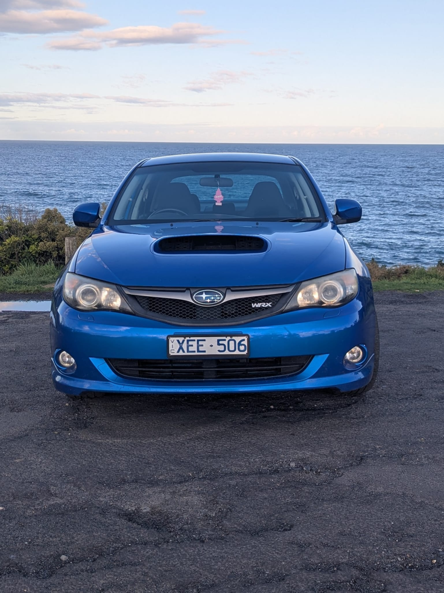
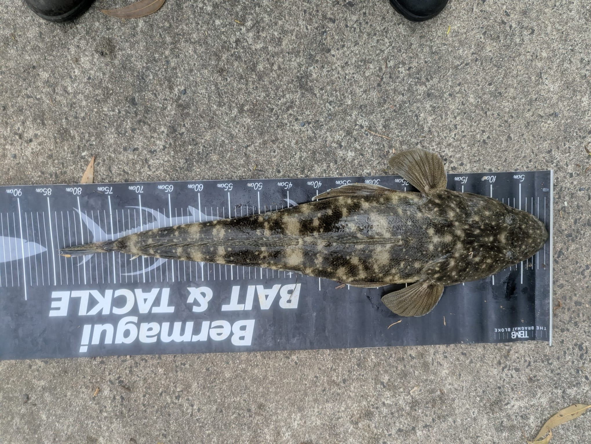
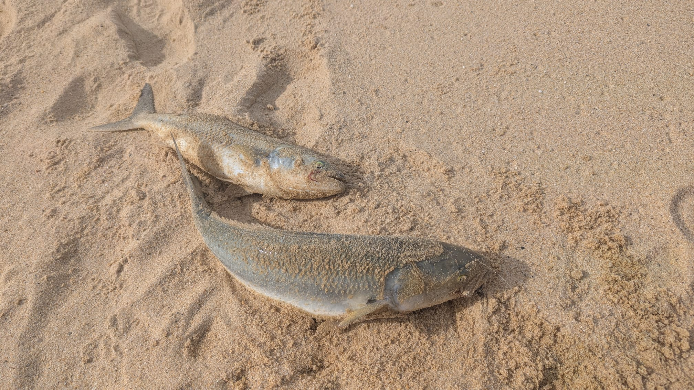
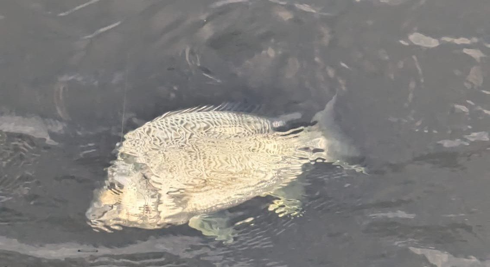

I mostly just play too many videogames. Sometimes I write code and make stuff like this website. Have a look.
My Car

2009 Subaru Wrx
skkkrrrrrrrrrrrt
Engine Stat
Benchmark Specification
Power Output
265 hp
Transmission
5-Speed Manual
0-60 mph
4.8 seconds
Year / Model
2009 (Narrowbody)
CURRENT MODIFICATIONS
Turbo-Back Exhaust System — Upgraded downpipe & full 3 inch exhaust
Recent Fish

Dusky Flathead83 cm

Australian Salmon49cm

Yellow Bream43 cm
Music I'm Listening To
SELECT_A_TRACK.SYS
PLAYLIST INTERACTIVE
01
FREAKIN OUT
Dexter and the Moonrocks
02
222
Kai Banks
03
EARRINGS
Malcolm Todd
TV & Movies
The Sopranos
Slow Horses
Current Videogames
FORZA HORIZON 6
FISHING PLANET
STARFIELD
Skills
Figma, UI/UX Architecture, and Responsive Layout Design
WordPress Core Architecture and Custom Platform Integrations
Lua Scripting and Custom System Logic Engineering
Semantic HTML5, CSS Optimization, and Cross-Browser Compatibility
Linux Systems Administration and Bash Shell Automation
Cloud Infrastructure Virtualization and Security Auditing
Declarative Prompt Engineering and Context Window Optimization
Multi-Shot Logic Parameters and LLM Integration Operations
Search Engine Optimization (SEO) and Performance Diagnostic Auditing
MY WORK
A collection of recent web design and development projects, custom UI builds, and digital experiments.
[01] BALDRICK
Economy & Gambling Simulation
A multi-functional Discord application centered around virtual economic progression, gambling simulations, and a fully realized recreational fishing module. Engineered to handle state tracking, probabilistic loot drops, and concurrent interactive user sessions seamlessly.
TECH STACK & TOOLS
Environment: Node.js / Discord.js API / JavaScript (JS).
A self-learning chat companion that constructs conversational context matrices entirely client-side. Uses custom SQLite schema tracking to build a localized knowledge base from chat history via a multi-order Markov chain shard matrix and word-pair semantic co-occurrence networks. Includes automatic visual asset cataloguing and real-time canvas buffer text overlays based on dynamic user affinity metrics.
The site you're currently looking at. A custom-engineered portfolio featuring a brutalist retro aesthetic, real-time JS canvas star mapping, and an interactive assistant system. Designed entirely from scratch to act as a personal digital playground.
TECH STACK & TOOLS
Design: Figma prototyping and custom UI/UX architecture.
Development: Semantic HTML5, CSS optimization, and Vanilla JavaScript (Canvas API).